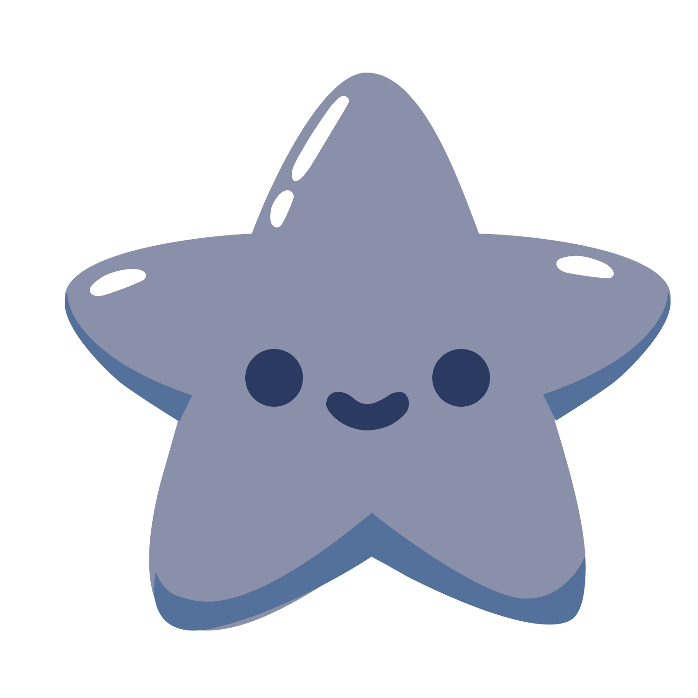
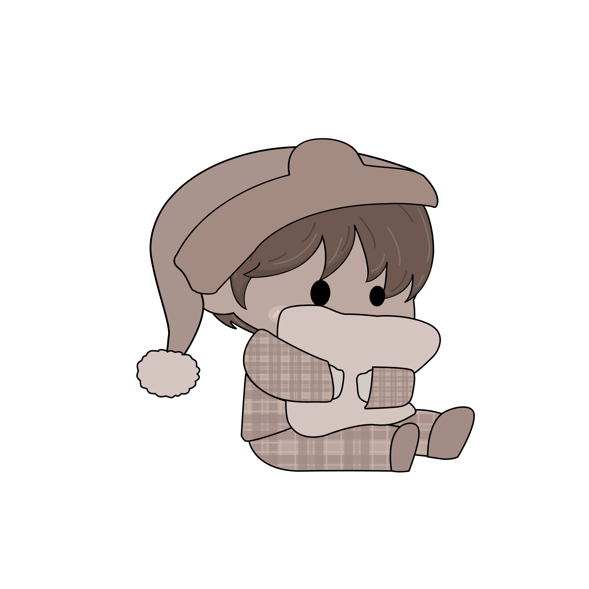
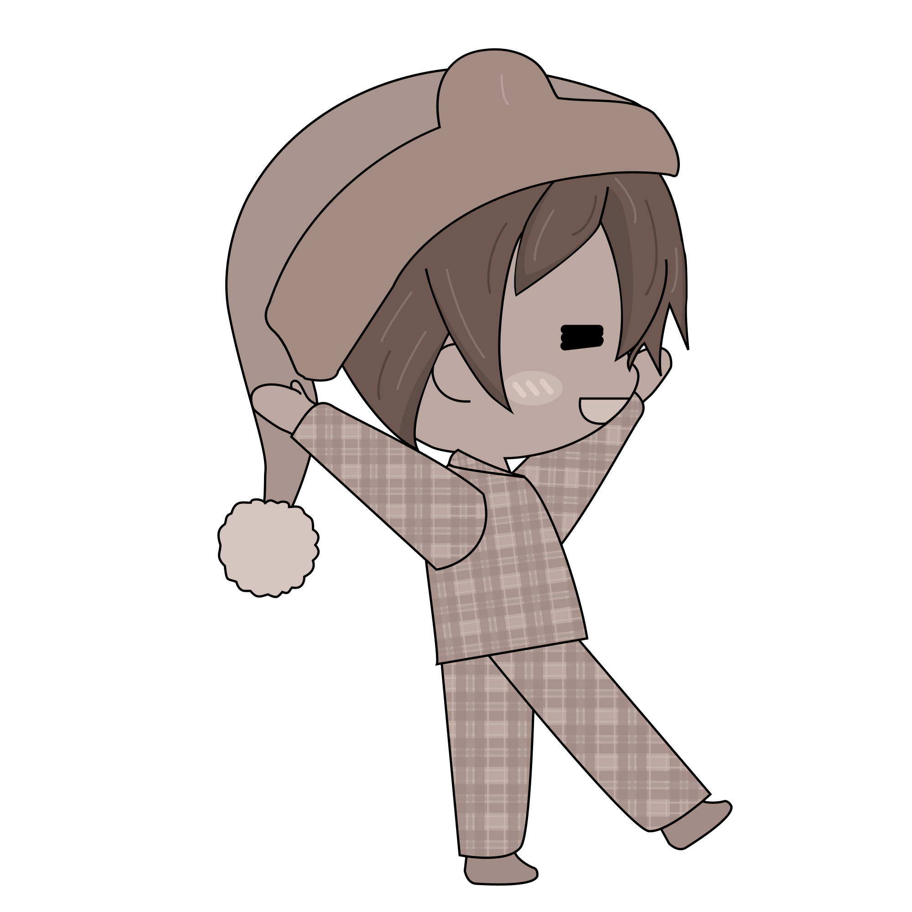
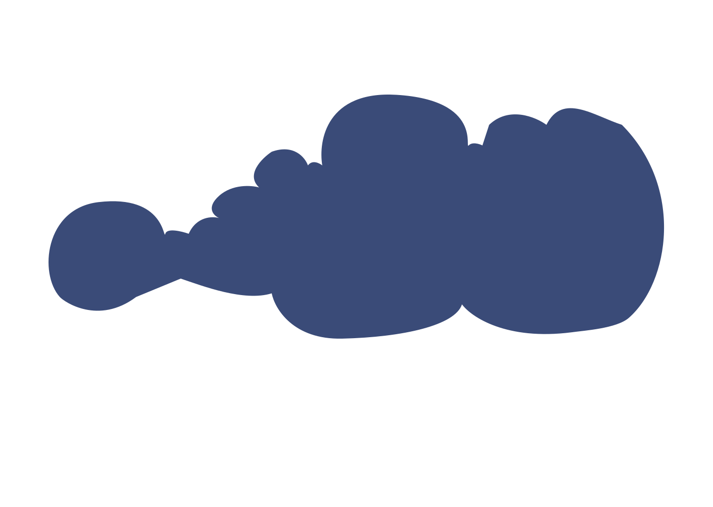
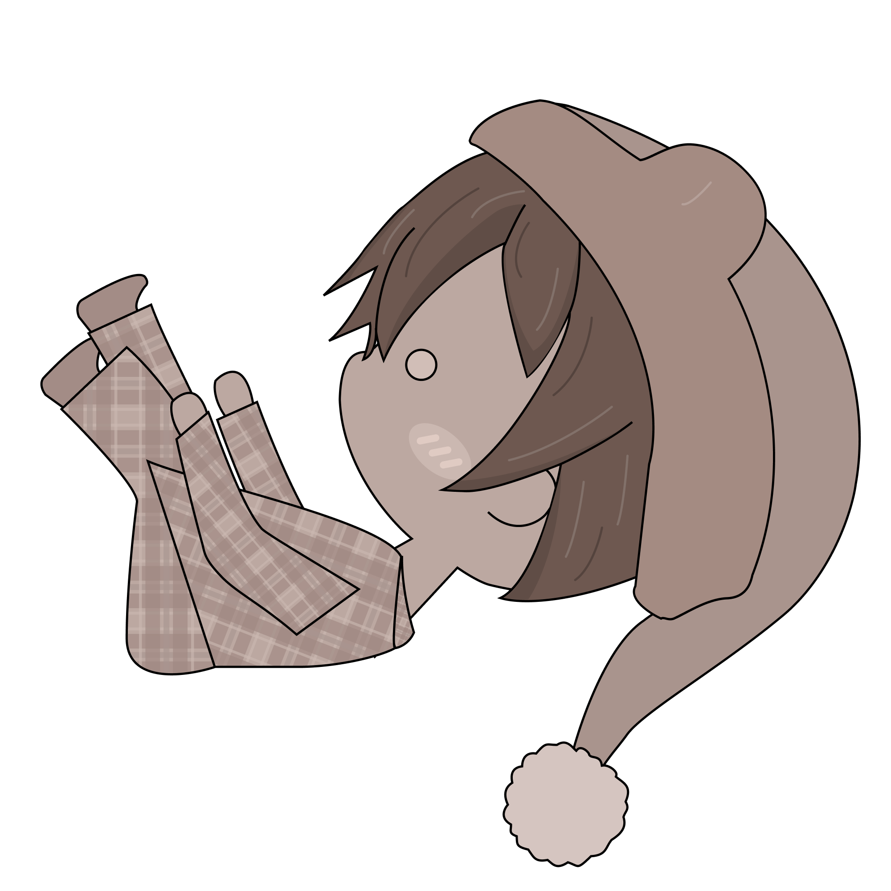
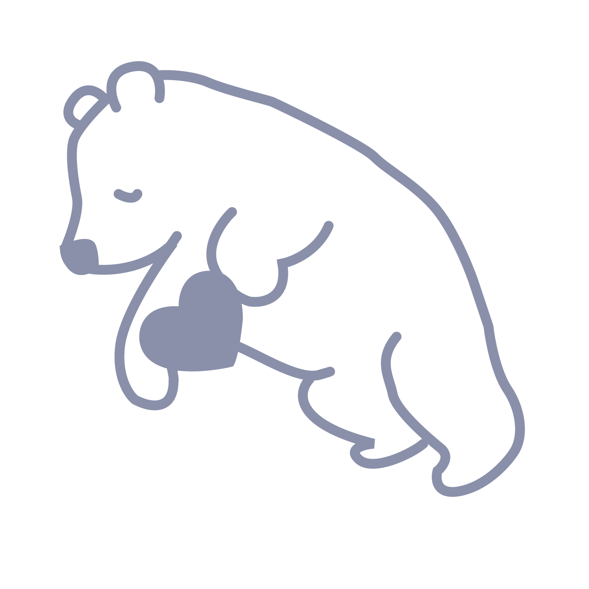

Pendant son sommeil, Polaris rêve de voyager dans l'espace parmi les étoiles, découvrant un monde enchanté avec des astres vivants et des créatures célestes mystérieuses.
1
-
scrollTrigger
- Compostion des éléments du lit + Polaris
- Translation Y de la lune
- Changement opacité texte chapitre
- Translation et opacité y pour les constellations
Au réveil, Polaris trouve qu'il est loin de chez lui, accompagné d'une étoile brillante nommée Muscida, qui lui promet de l'accompagner dans son périple à travers ce monde enchanté.
2
 - Changement d'opacité: Polaris + lit
- Changement d'échelle étoile
- Changement opacité texte chapitre
-
scrollTrigger
- joue en entrant et à l'envers si on revient (haut dans la page)
- se complète après avoir passéet revient au début si on remonte
Après sa rencontre avec Muscida, étoile bienveillante, Polaris trouve en elle son guide à travers les constellations vivantes.
3
- Motion path de l'étoile
-
scrollTrigger
- Changement opacité: Polaris + lit
- Changement opacité texte chapitre
- Translation Polaris en Y (loop)
Polaris tombe dans un trou invisible.
4
 -
scrollTrigger
- Paralaxe nuages 1,2 et 3
- Polaris translation rotation Y
- Paralaxe Background
En avançant, Polaris croise l'ombre, une entité malveillante qui menace d'éteindre les étoiles et plonger le monde dans l'obscurité.
5
-
scrollTrigger
- Translation X Polaris
- Spritesheet météorite
Avec bravoure, détermination et l'aide de Muscida, Polaris triomphe de l'ombre, ramenant la brillance aux étoiles, symbolisant la victoire de la lumière.
6
Détermination
Audace
Courage
- Étoile loop axe Y
-
scrollTrigger
- Apparition des mots: opacité
- Changement d'opacité Polaris
- Changement opacité texte chapitre
Après leur triomphe, Polaris et Muscida dansent joyeusement. Muscida révèle sa vraie forme, devenant la constellation de la Grande Ourse.
7
- Motion Path étoile-coeur
-
scrollTrigger
- Changement grandeur: étoile
- Changement d'opacité Polaris
- Changement d'opacité petit ours
- Changement opacité texte chapitre
À son réveil, Polaris découvre que son rêve n'était pas seulement imaginaire mais aussi une inspiration pour sa vie.
8
-
scrollTrigger
- Compostion des élements du lit + Polaris
- Changement d'opacité Polaris
- Draw Svg Z
- Opacité et translation y (constellations)